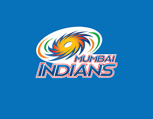

Five-time IPL Champions | Mumbai, Maharashtra
Mumbai Indians (MI) are a professional Twenty20 franchise cricket team based in Mumbai, Maharashtra, competing in the Indian Premier League (IPL). The team was founded in 2008 and is owned by Reliance Industries through its subsidiary Indiawin Sports Pvt. Ltd.
Playing their home matches at the Wankhede Stadium, Mumbai Indians are widely regarded as one of the most successful IPL franchises, having won five IPL titles.
Mumbai Indians lifted their first IPL trophy in 2013 under the leadership of Rohit Sharma, who later became one of the most successful captains in IPL history. The team went on to win further titles in 2015, 2017, 2019, and 2020, making MI the first franchise to win five IPL trophies.
Over the years, MI have featured iconic players such as Sachin Tendulkar, Lasith Malinga, Kieron Pollard, and Rohit Sharma, contributing to their reputation as an IPL dynasty.
The team’s motto, “Duniya Hila Denge Hum…”, reflects their aggressive and entertaining style of play on the field. The squad plays in blue and gold inspired jerseys, symbolising the pride of the city of Mumbai and the club’s champion legacy.